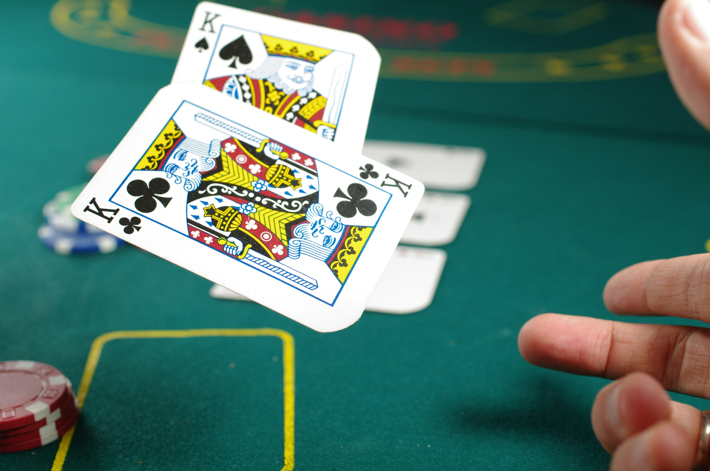

Eine erfolgreiche Pokerstrategie basiert auf mehreren wichtigen Faktoren. Einer der wichtigsten ist die Auswahl der Starthände. Nicht jede Hand sollte gespielt werden. Starke Karten wie Asse oder Könige bieten bessere Gewinnchancen als schwächere Karten.Auch die Position am Tisch spielt eine große Rolle. Spieler, die später an der Reihe sind, haben mehr Informationen über die Entscheidungen ihrer Gegner und können dadurch bessere Entscheidungen treffen.
Ein weiterer wichtiger Begriff sind die Pot Odds. Dabei wird verglichen, wie groß der mögliche Gewinn im Verhältnis zum erforderlichen Einsatz ist. So kann ein Spieler berechnen, ob sich ein weiterer Einsatz mathematisch lohnt.
Ebenso wichtig ist das Bankroll Management. Dabei verwaltet ein Spieler sein verfügbares Geld so, dass auch längere Verlustphasen überstanden werden können. Gute Spieler setzen nur einen kleinen Teil ihres Gesamtbudgets pro Spiel ein.
Langfristiger Erfolg im Poker entsteht nicht durch einzelne glückliche Hände, sondern durch viele gute Entscheidungen über einen längeren Zeitraum.